Lluvia
Tejidos técnicos repelentes al agua, capuchas amplias y costuras selladas para caminar sin prisa bajo el chaparrón.
Verde de bosque, tacto de musgo y el ruido de la lluvia contra la ventana. Prendas para los días que invitan a salir igualmente.
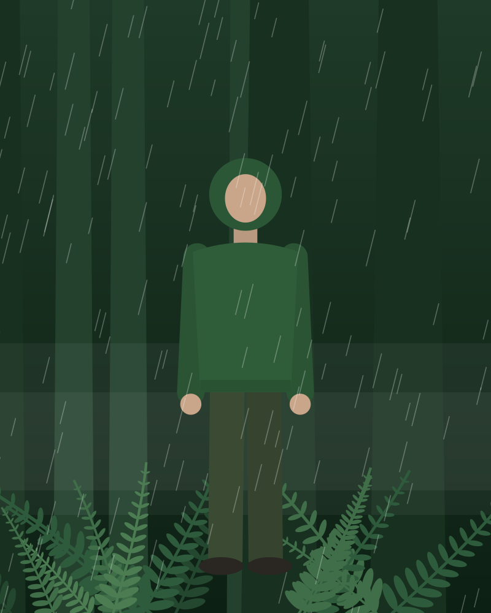
La colección nace de un paseo por el bosque después de llover.
Tejidos técnicos repelentes al agua, capuchas amplias y costuras selladas para caminar sin prisa bajo el chaparrón.
Verdes profundos, marrón corteza y bolsillos amplios. Siluetas oversize pensadas para llevar capas encima.
Felpas gruesas y tejidos con textura suave, como tocar una piedra cubierta de musgo en un día húmedo.
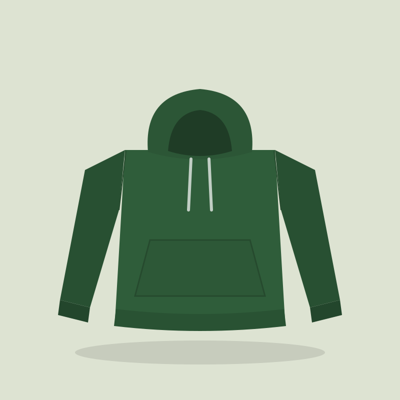
Nuevo59,00 €
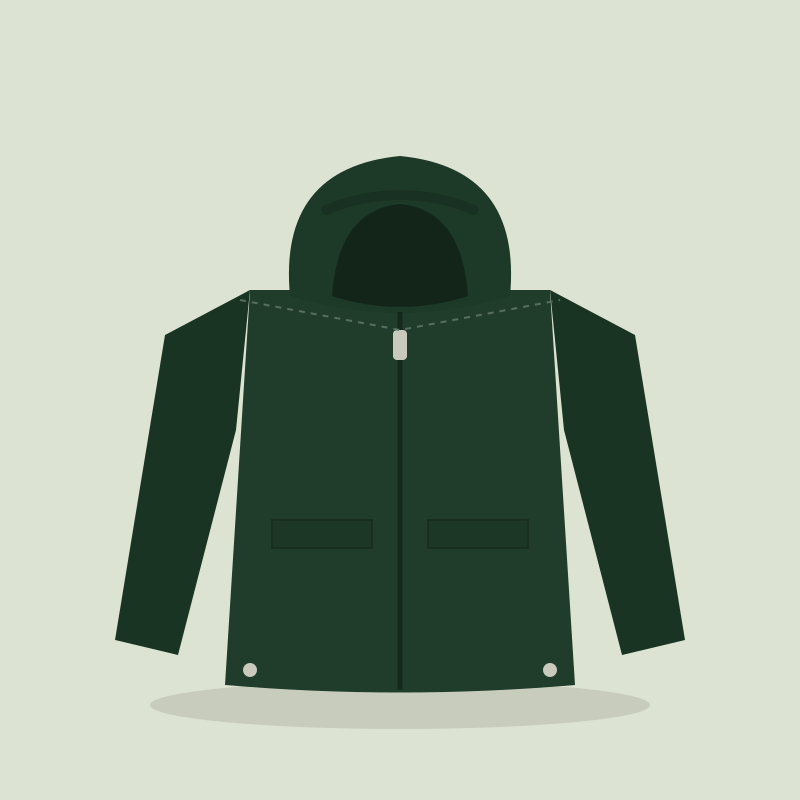
Nuevo89,00 €
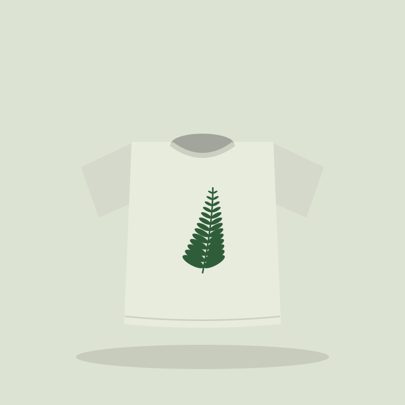
29,00 €
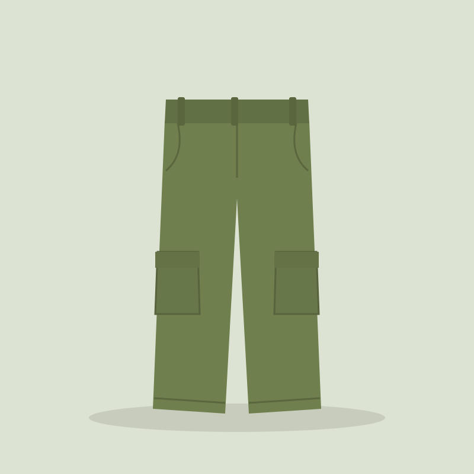
55,00 €
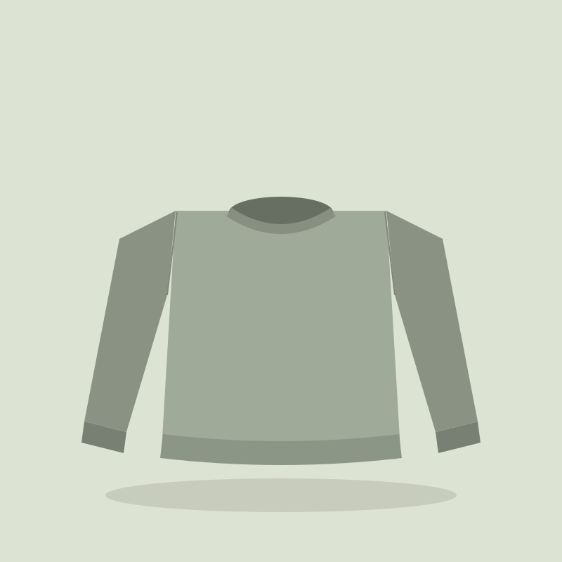
48,00 €
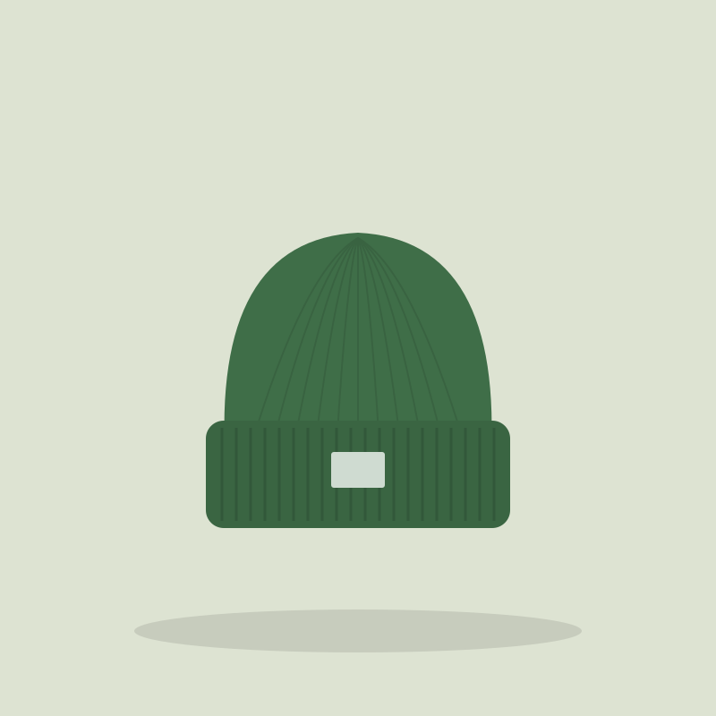
19,00 €
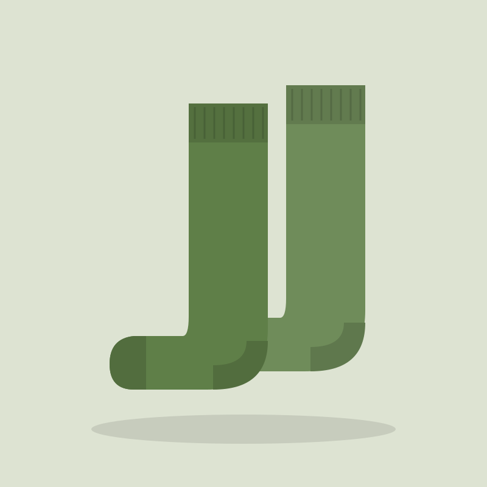
12,00 €
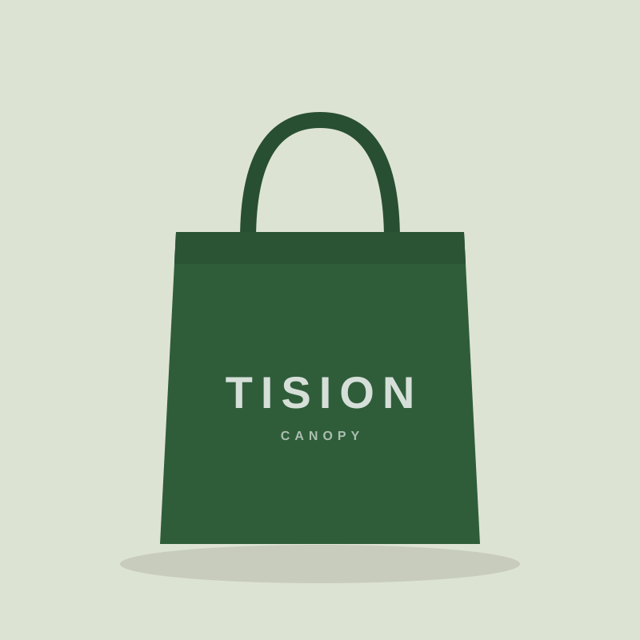
Últimas22,00 €
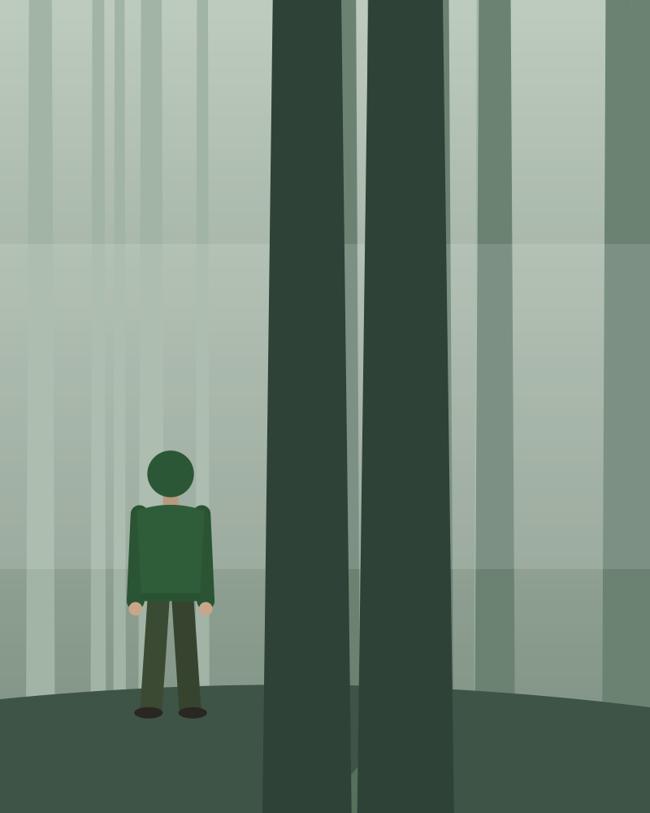
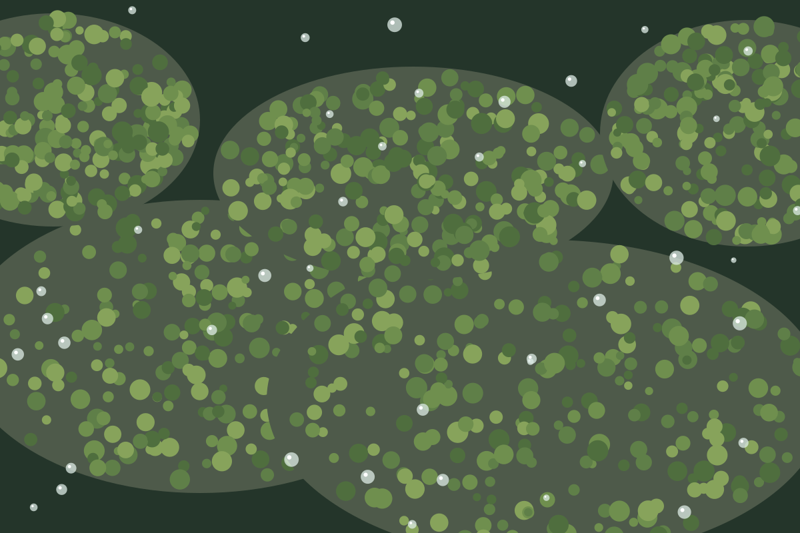
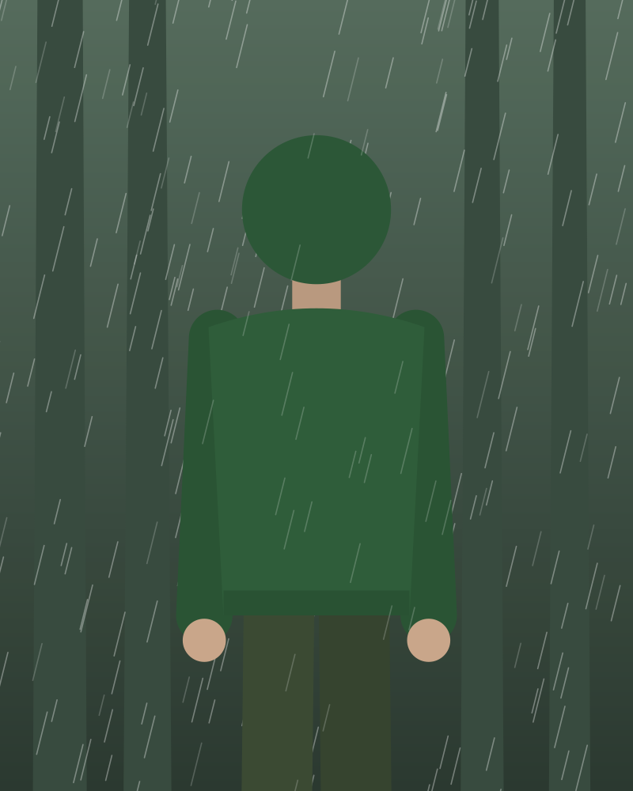
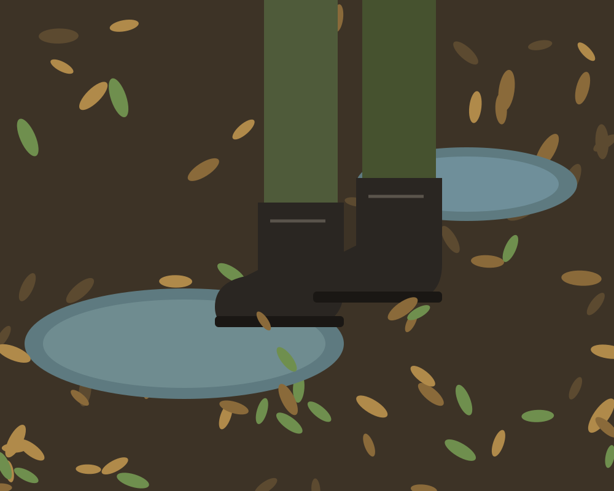
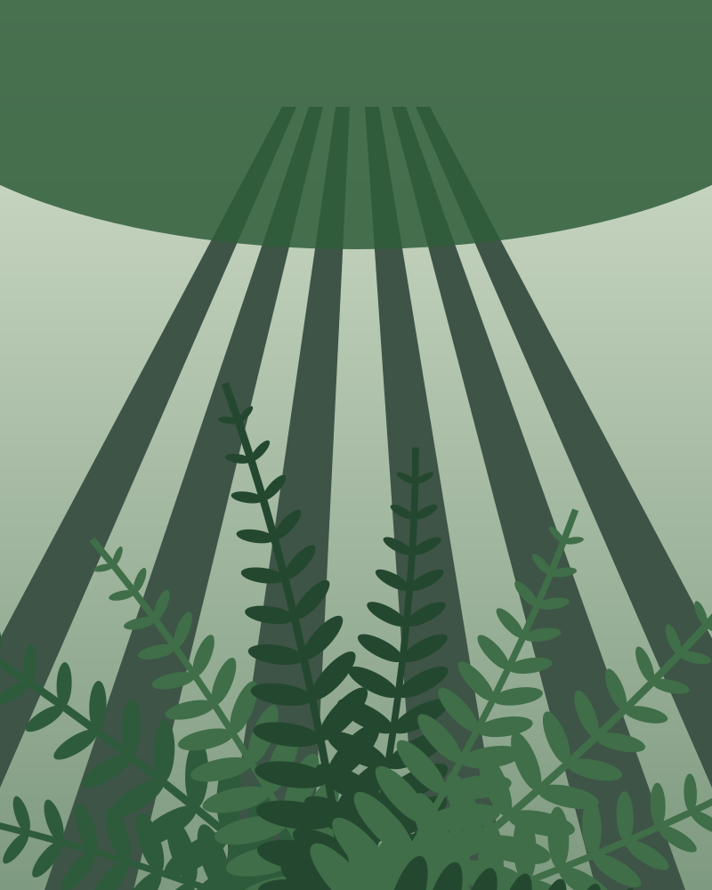